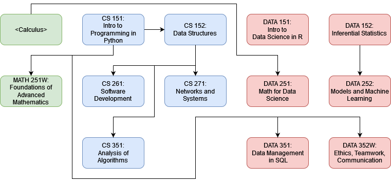

This page will show degree paths other than the two B.S. degrees offered by Computing and Data Programs.
Double-major programs
Distribution
- 5 courses in Computer Science
- 5 courses in Data Science, 4 if taking Statistics outside Data Science
- 2 courses in Mathematics, 3 if taking Statistics or Calculus in Mathematics, 4 if taking both
Requirements
*Denotes classes with requirements that do not count toward the minor.
- Statistics Requirement, choose one of
- DATA 152 : Inferential Statistics
- MATH 138 : Introduction to Applied Statistics
- DATA 151 : Intro to Data Science in R
- CS 151 : Intro to Programming in Python
- CS 152 : Data Structures
- MATH 251W: Foundations of Advanced Mathematics
- MATH 280 : Math for Data Science*
- Machine Learning Requirement, choose one of
- DATA 252 : Models and Machine Learning
- CS__ 475 : Machine Learning*
- CS 261 : Software Development
- CS 271 : Networks and Systems
- CS 351 : Analysis of Algorithms
- DATA 351 : Data Management with SQL
- DATA 352W: Ethics, Teamwork, Communications
Dependency Graph
Notes
- CS 151 is required MATH 251W, CS 152, DATA 351, and DATA 352W.
- DATA 151 is required for DATA 152. It is not required for MATH 138.
- Statistics and DATA 151 are required for DATA 252. CS 370 which requires CS 151 is required for CS 475.
- There are no remaining elective requirements.
3+1 BS/MS Programs
Distribution
- 2 courses in Data Science, 1 if taking Statistics outside Data Science
- 1 course in Computer Science
- 1 course in Mathematics, 2 if taking Statistics in Mathematics
- 2 electives in Data Science, Computer Science, or otherwise approved
- 8 graduate/professional courses in Data Science, Computer Science, or otherwise approved
Requirements (Undergraduate)
*Requires calculus or instructor consent.
- Statistics Requirement, choose one of
- DATA 152 : Inferential Statistics
- MATH 138 : Introduction to Applied Statistics
- DATA 151 : Intro to Data Science in R
- CS 151 : Intro to Programming in Python
- MATH 280 : Math for Data Science*
- Elective
- Elective
Notes
The M.S. in Data Science is a PROFESSIONAL and TERMINAL degree. It is not a research degree, does not have a thesis component, and is not intended to prepare students for doctoral (Ph.D.) study and students interested in graduate school with a research focus should consult their advisor before committing to the program. As a professional degree, the M.S. is tuition-funded, rather than grant-funded, though undergraduate financial aid agreements apply.
Students are considered undergraduates for three years of two semesters, then graduate/professional students for one year of three semesters.
Students must ensure they meet the undergraduate credit requirement to graduate on time. In practice, this means taking four full courses (16 credit hours) every semester during the three undergraduate years, and an additional course over the three years, usually by taking two half-courses (2 credit hours each) to avoid additional tuition costs. I recommend MATH 102X, MATH 153, and ARTH 10X classes.
There are a few courses that Dual Degree students should not take because they are redundant with graduate level coursework:
- DATA 252 :
Models and Machine Learning - DATA 351 :
Data Management with SQL - DATA 352W:
Ethics, Teamwork, Communications
Distribution
- 2 courses in Data Science, 1 if taking Statistics outside Data Science
- 5 course in Computer Science
- 2 course in Mathematics, 3 if taking Statistics in Mathematics
- 8 graduate/professional courses in Data Science, Computer Science, or otherwise approved
Requirements (Undergraduate)
*Requires calculus or instructor consent.
- Statistics Requirement, choose one of
- DATA 152 : Inferential Statistics
- MATH 138 : Introduction to Applied Statistics
- DATA 151 : Intro to Data Science in R
- CS 151 : Intro to Programming in Python
- CS 152 : Data Structures
- MATH 251W: Foundations of Advanced Mathematics
- MATH 280 : Math for Data Science*
- CS 261 : Software Development
- CS 271 : Networks and Systems
- CS 351 : Analysis of Algorithms
Notes
All notes as in the above degree programs, other than that there are no electives. DATA 504W counts toward the DATA 352W requirement for the B.S. Computer Science.
Proposed Minors (Subject to Change)
Distribution
- 3 courses in Data Science, 2 if taking Statistics or Machine Learning outside Data Science, 1 if taking both outside
- 2 courses in Mathematics, 3 if taking Statistics in Mathematics
- 1 elective in Data Science, or MATH 352, ECON 350, BIOL 342, BIOL 347, SOC 341
Requirements (Undergraduate)
*Denotes classes with requirements that do not count toward the minor.
- Data Science Requirement, choose one of
- DATA 151 : Intro to Data Science in R
- Statistics Requirement, choose one of
- DATA 152 : Inferential Statistics
- MATH 138 : Introduction to Applied Statistics
- Machine Learning Requirement, choose one of
- DATA 252 : Models and Machine Learning
- CS__ 475 : Machine Learning*
- Integral Calculus Requirement, choose one of
- MATH 152 : Calculus II
- MATH 249 : Multivariable Calculus
- Probability Requirement, choose one of
- MATH 266 : Probability and Statistics
- MATH 376 : Topics: Probability Theory*
- Elective
Notes
This is a proposed program and is subject to change. CS 475 requires CS 370 which requires CS 151. MATH 376 requires MATH 251W. AP Credit in Statistics and Calculus (BC) is accepted.
Distribution
- 4 courses in Mathematics
- 1 course in Computer Science
- 1 elective listed here which includes any CS/DATA 200+.
Requirements
- MATH 249 : Multivariable Calculus
- MATH 251W: Foundations of Advanced Mathematics
- MATH 256 : Differential Equations
- Topics Requirement, choose one of
- MATH 266 : Probability and Statistics
- MATH 280 : Math for Data Science
- MATH 352 : Linear Algebra
- MATH 376 : Topics: Any
- CS 151 : Intro to Programming in Python
- Elective
Notes
This is a proposed program and is subject to change.